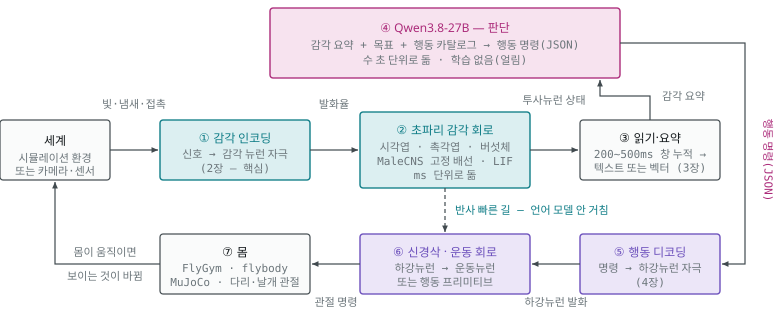
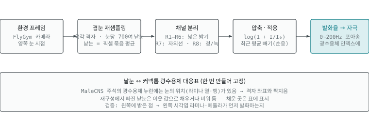
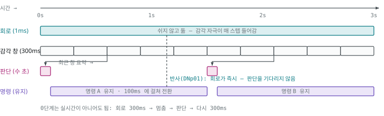

06. 설계 — 초파리 회로에 Qwen 뇌 잇기
초파리 감각 회로가 먼저 바깥 신호를 받아 처리하고, 그 결과를 Qwen3.8-27B 가 받아 판단하고, 판단을 다시 초파리의 하강뉴런·운동 회로가 받아 행동으로 옮기는 닫힌 고리의 설계. 부품 사양·수치는 공식 문서·저장소 원문에서 가져왔고, 설계(대응표·게인·창·카탈로그·단계)는 이 문서에서 처음 제안한 것이다. 직접 돌려 보지 않았다. 이 설계에서 나오는 지능이 누구 것인지는 07 — 판단은 언어 모델의 것이다. 만들기 전에 그 문서를 먼저 읽는다.
| 부품 | 값 |
|---|---|
| 초파리 쪽 | MaleCNS v1.0 — 뉴런 166,700 · 연결 2,558만 · CC BY 4.0 |
| 언어 모델 | Qwen3.8-27B — 64층 · 은닉 5,120 · 어휘 248,320 · Apache 2.0 · 2026-08 공개 · 이미지 입력 가능 |
| 실행 환경 | 맥 통합 메모리 32GB 이상 (24GB 최소 · 64GB 여유) |
0. 무엇을 만드는가
초파리의 감각 주변부와 운동 주변부는 그대로 두고, 가운데 「판단」 자리에 언어 모델을 앉힌다. 실제 초파리에서 감각 → 중심뇌 → 하강뉴런 → 신경삭 → 근육으로 가는 흐름 가운데, 중심뇌의 판단 부분을 Qwen 이 맡는다. 05의 사례들(FLM·CHIMERA)과 반대 방향이다 — 거기서는 글자가 먼저였고, 여기서는 세계가 먼저다.

시계 방향 한 바퀴: 세계 → ① 감각 인코딩 → ② 초파리 감각 회로 → ③ 읽기·요약 → ④ 언어 모델 → ⑤ 행동 디코딩 → ⑥ 신경삭·운동 회로 → ⑦ 몸 → 세계. 감각 인코딩(①)은 들어오는 쪽에서 한 번만 거치고, 언어 모델의 명령은 감각 인코딩을 다시 거치지 않고 행동 디코딩(⑤)으로 바로 간다. 초파리 회로(②·⑥)는 밀리초 단위로 계속 돌고, 언어 모델(④)은 수 초에 한 번 판단한다(맥 미니 M4 32GB 4비트 기준 결정당 7~10초 — 5장). 도망 같은 반사는 ②에서 ⑥으로 바로 이어지고(점선), 언어 모델은 느린 결정만 맡는다.
이 설계에서 학습되는 것은 없어도 된다. 0단계는 Qwen 을 얼린 채로 감각 요약을 글로 주고 행동 명령을 글로 받는다. 학습(읽기 어댑터·행동 헤드)은 그 뒤 선택 사항이다(7장). 커넥톰은 어느 단계에서도 고정 배선이다.
1. 부품과 자리
| 부품 | 무엇으로 | 도는 곳 | 속도 | 학습 |
|---|---|---|---|---|
| (감각) 세계 | FlyGym(NeuroMechFly v2) 환경 — 지형·냄새 원·시각 장면. 나중엔 카메라·마이크 | CPU (MuJoCo) | 물리 스텝 ~1ms | — |
| (감각) 감각 인코더 | 빛·냄새·접촉 → 감각 뉴런별 발화율. 2장 | CPU/GPU | 회로 스텝마다 | 없음(고정 규칙) |
| (감각) 초파리 회로 | MaleCNS 그래프 + LIF(mps-malecns-model 계열) — 뇌 전체를 돌리되 읽는 곳은 정함 | 맥 GPU(MPS) | dt 0.1~1ms | 없음(고정 배선) |
| (판단) 읽기·요약 | 투사뉴런·출력뉴런 집단의 창 누적 발화율 → 텍스트(0단계) 또는 벡터(1단계). 3장 | CPU | 200~500ms 창 | 0단계 없음 · 1단계 소형 어댑터 |
| (판단) Qwen3.8-27B | MLX 4비트. 시스템 프롬프트(몸·카탈로그·목표) + 감각 요약 → 행동 JSON | 맥 GPU(MLX) | 수 초/결정(5장) | 없음(얼림) |
| (행동) 행동 디코더 | 행동 JSON → 하강뉴런 자극 벡터. 4장 | CPU | 결정마다 | 없음 |
| (행동) 운동 회로·몸 | (가) 하강뉴런 → 신경삭 회로 → 운동뉴런 → 관절 / (나) 하강뉴런 → FlyGym 행동 프리미티브 | GPU / CPU | ms | (나) 프리미티브는 FlyGym 제공 |
맥 한 대에서 GPU 를 쓰는 것은 둘(초파리 회로 · Qwen)이다. 통합 메모리를 나눠 쓰므로 8장의 예산을 먼저 본다.
2. 핵심 — 신경 신호를 초파리에게 어떻게 줄 것인가
커넥톰은 「누가 누구와 이어졌나」만 말한다. 바깥 세계가 어떤 뉴런을 얼마나 세게 켜는지는 데이터에 없다. 그래서 이 단계는 설계이고, 이 설계가 곧 실험 결과를 정한다. 다섯 가지를 정해야 한다.
- 어느 뉴런에 — 감각별 입구 뉴런 집단(광수용체·후각 수용 뉴런·미각 수용 뉴런·기계감각 뉴런)
- 무엇을 단위로 — 발화율(Hz) 또는 입력 전류. 발화율이 안전하다(Shiu 모델도 정해진 주파수의 포아송 발화로 자극)
- 어떻게 대응시켜 — 물리량(밝기·농도·힘)을 발화율로 바꾸는 곡선
- 얼마나 세게 — 게인. 너무 세면 뇌 전체가 발화하고, 약하면 아무 일도 없다
- 어떤 시간 단위로 — 회로 스텝(ms)·세계 프레임(수십 ms)·언어 모델 결정(초)을 맞추는 법
손에 있는 시뮬레이터가 실제로 받는 입력·내는 출력은 02 의 「mps-malecns-model 이 받는 입력과 내는 출력」 에 코드 기준으로 적었다 — 명령줄은 「한 종류에 상수 자극」뿐이고, 세포별·스텝별 입력은
ConnectomeLIF.forward(drive)를 파이썬으로 불러 넣는다. 히스타민 부호가 0 이라 광수용체 자극이 퍼지지 않는 점도 거기에 있다.
2.0 한눈에 — 종류 · 주입 · 강도
| 층 | 뉴런 종류 | 주입 — 무엇을 어떻게 | 강도 — 시작값과 맞추는 법 | 검산 |
|---|---|---|---|---|
| 입구 · 시각 | 광수용체 R1–R6(밝기), R7·R8(색). MaleCNS 추적 완료 4,107 개(히스타민 −) | 낱눈 밝기 → 로그 압축 → 발화율(Hz) → 포아송 발화. 매 프레임 계속 | 0~200Hz. 어두움 0, 최대 밝기 200 | 왼쪽 밝은 점 → 왼쪽 시각엽 먼저 발화. 다가오는 그림자 → DNp01 |
| 입구 · 후각 | 후각 수용 뉴런, 사구체 약 50종 | 냄새 종류 → 사구체 반응표 × 농도 → 발화율 | 0~150Hz. 순응(같은 냄새 지속 시 감소) | 냄새를 오른쪽에 → 오른쪽 사구체 우세 → 투사뉴런 좌우 차 |
| 입구 · 미각 | 당·쓴맛·물·소금 수용 뉴런 | 접촉 물질 종류·농도 → 해당 종류만 발화 | 접촉 시 50~150Hz, 아니면 0 | 단맛 → 주둥이 뻗기 운동뉴런 |
| 입구 · 기계감각 | 다리·존스턴 기관 뉴런 | FlyGym 접촉 힘·관절 각도 → 발화율 | 힘에 비례, 상한 100Hz | 닿은 다리의 기계감각 뉴런만 반응 |
| 출구 · 행동 | 하강 뉴런(DNp01 · DNa02 · DNp09 계열 …) | 행동 JSON → 해당 집단 목표 발화율. 100~200ms 에 걸쳐 전환 | 명령값(0~1) × 집단 최대 발화율 | 자극 뒤 신경삭 운동뉴런이 그 방향으로 반응 |
| 조절(선택) | 도파민(PAM·PPL1) · 옥토파민 뉴런 | 보상·처벌 판정 시 짧은 발화(100~300ms) + 시냅스를 바꾸는 규칙 | 규칙의 학습률이 곧 강도 — 데이터에 없어 사람이 정함 | 「무작위 보상」 대조군보다 나아지나 |
시작값(Hz)은 이 문서의 제안이고 실측이 아니다. 2.4 의 절차로 맞춘 뒤 파일로 잠근다.
근사 하나 — 광수용체와 시각엽 앞단 뉴런은 실제로는 스파이크를 내지 않고 연속 전위로 신호를 보낸다. 발화율로 넣는 것은 근사이며, 거친 전파 예측에는 통하지만 시각 앞단의 세밀한 동작을 볼 때는 첫 번째 오차 원천이다.
2.1 감각별 입구 — 어느 뉴런에 무엇을
| 감각 | 입구 뉴런 (MaleCNS) | 세계 → 발화율 규칙 | 근거 자료 | 난이도 |
|---|---|---|---|---|
| 시각 | 광수용체 R1–R6(밝기·움직임), R7(자외선)·R8(청·녹). MaleCNS 추적 완료 기준 R1–R6 1,394 · R7 1,384 · R8 1,329 = 4,107(08). 물질은 히스타민(−) — 빛이 들어오면 라미나가 억제되는 것이 맞는 동작 | 장면을 겹눈 격자로 재샘플링(FlyGym 눈당 721 낱눈, 창백형 216 · 노랑형 505) → 낱눈마다 밝기·색 → 로그 압축 → 발화율. 움직임은 시간차로 생기므로 프레임을 연속으로 넣어야 방향 선택 뉴런이 반응. 대응은 주석의 assignedOlHex1/2 격자 좌표로 |
FlyGym compound_eye.npz · flyvis |
가장 잘 됨 |
| 후각 | 더듬이·아랫입술수염 후각 수용 뉴런 → 촉각엽 사구체 약 50종 | 냄새 이름 → 사구체별 반응 표 → 농도로 배율 → 발화율. FlyGym 이 더듬이 위치의 농도를 계산해 줌 | DoOR 데이터베이스(냄새-수용체 반응 표) · 촉각엽 주석 | 됨 |
| 미각 | 주둥이·다리 미각 수용 뉴런 — 당·쓴맛·물·소금 | 접촉한 물질 종류·농도 → 해당 종류 뉴런 발화율. 접촉은 FlyGym 접촉 힘으로 판정 | Shiu 모델 단맛·쓴맛 실험 · MaleCNS 미각 동반 논문 | 됨 |
| 청각·기계감각 | 존스턴 기관 뉴런(진동) · 다리·몸 기계감각 뉴런(신경삭) | 소리 → 주파수 대역 → 존스턴 기관 그룹 발화율. 다리 접촉·관절 각도 → FlyGym 힘·각도 → 다리 기계감각 뉴런 | FlyGym 기계감각 피드백 · 신경삭 주석 | 됨(다리 쪽 대응이 큼) |
| 온도·습도 | 더듬이 온도·습도 수용기 | 환경 값 → 발화율 | 주석 | 쉬우나 쓸모 적음 |
처음에는 시각·후각·다리 접촉 셋만 켠다. 시각은 자료와 모델이 가장 좋고, 후각은 목표 지향 행동(냄새 찾아가기)을 만들며, 다리 접촉은 걷기 되먹임에 필요하다.
2.2 시각 입력의 상세 — 프레임 한 장이 광수용체 발화가 되기까지
⚠️ 구현에서 잰 것(R-3340 · 2026-09-22): 광수용체 R1–R6 1,394 개를 150 Hz 로 300 ms 자극해도 라미나·시각엽·그 뒤 발화 0 이었다. 빛 신호는 이중 반전(빛 → 광수용체 → 히스타민이 L1 억제 → L1 의 글루탐산 감소 → Mi1 이 풀림)으로 전달되는데, 쉬는 상태가 침묵인 LIF 는 「억제를 푸는」 경로를 표현하지 못한다(FLYCNS 도 같은 결론 — 09 의 4절). 그래서 구현은 아래 경로 대신 계산한 시각 특징(방위 · 각 크기 · 확대 속도)을 시각 투사 뉴런(LC · LPLC)에 넣는다(F1 모나코 · FLYCNS 와 같은 자리). 아래 설명은 설계 당시의 구상으로 남긴다.

- 환경 프레임 — FlyGym 카메라, 양쪽 눈 시점
- 겹눈 재샘플링 — 육각 격자, FlyGym 눈당 721 낱눈(원시 렌더 512×450, 시야 157°). 낱눈 = 픽셀 묶음 평균
- 채널 분리 — R1–R6 넓은 밝기 · R7 자외선 · R8 청/녹
- 압축·적응 —
log(1 + I/I₀), 최근 평균 빼기(순응) - 발화율 → 자극 — 0~200Hz 포아송, 광수용체 인덱스에
낱눈 ↔ 커넥톰 광수용체 대응표(한 번 만들어 고정): MaleCNS 주석의 광수용체 뉴런에는 눈의 위치(라미나 열·행)가 있어 격자 좌표와 짝지을 수 있다. 재구성에서 빠진 낱눈은 이웃 값으로 채우거나 비워 두고, 채운 곳은 표에 표시한다. 검증: 왼쪽에 밝은 점 → 왼쪽 시각엽 라미나·메둘라가 먼저 발화하는지.
왼쪽 네 단계는 어느 시뮬레이터에서도 같은 순수 계산이고, 마지막 대응표만 MaleCNS 주석에 기댄다. 움직임 감지는 프레임 사이 차이에서 회로가 스스로 만들어내므로, 인코더는 프레임을 계속 넣기만 하면 된다.
2.3 후각 입력의 상세
냄새는 시각보다 대응이 쉽다. 세계에 「냄새 원」 몇 개와 농도장이 있고, 초파리 더듬이 위치의 농도를 FlyGym 이 계산해 준다. 그 농도를 냄새 종류별 수용체 반응 표로 사구체(약 50종) 발화율로 바꾸고, 각 사구체의 후각 수용 뉴런 인덱스에 넣는다.
- 냄새 종류 → 수용체 반응은 DoOR 데이터베이스 같은 실험 표를 쓴다. 표에 없는 냄새는 임의 벡터라고 문서에 적는다.
- 농도 → 발화율은 시각과 같이 로그 압축 + 순응.
- 검증: 「먹이 냄새」를 오른쪽에 두면 오른쪽 더듬이 쪽 사구체가 더 발화하고, 투사뉴런을 거쳐 측각·버섯체에 활동이 나타나는지.
2.4 게인 보정 — 얼마나 세게
커넥톰 시뮬레이션의 가장 흔한 실패는 뇌 전체가 발화하거나(폭주), 아무 데도 안 가는 것(침묵)이다. 시냅스 세기를 시냅스 수로 근사하기 때문에 실제 세기 분포와 다르고, 그래서 입력 게인을 맞춰야 한다.
- 목표 활동 수준 — 한 창(200ms) 안에서 발화하는 뉴런 비율이 전체의 1~5% 안.
- 감각별로 게인을 따로 — 시각만 켜고 밝기 대비를 올려 가며 발화 비율을 재고, 후각도 같은 방법으로.
- 알려진 반사로 검산 — 다가오는 그림자(looming) → 시각엽 LPLC2 계열 → 거대섬유 → DNp01 발화 = 시각 게인이 맞음. 단맛 → 주둥이 뻗기 운동뉴런 = 미각 게인이 맞음.
- 게인은 파일로 고정, 실험마다 어느 게인 파일을 썼는지 기록.
게인을 「원하는 행동이 나올 때까지」 돌리면 실험이 아니라 조작이 된다. 게인은 알려진 반사로만 맞추고, 그 뒤에는 잠근다.
게인으로 안 되는 회로가 있다. FLYCNS 가 MaleCNS 에서 측정한 바(09 의 4절), 단맛 → 주둥이 뻗기는 「억제를 푸는」 경로라 쉬는 상태가 침묵인 LIF 로는 재현되지 않고, 균일한 배경 발화를 넣으면 도망 반사까지 죽는다. 그래서 검산 반사 셋 중 단맛 → 주둥이는 재현 실패가 정상일 수 있다. 재현하려면 뉴런 종류별 배경 발화율이라는 매개변수를 따로 두어야 하며, 이는 2단계에서 실험으로 정한다. 감각 부호화는 F1 사례(10)처럼 기대값에 대한 차이로 넣는 것이 회로가 구분하기 쉽다(절대 거리 d′ 0.6 → 상대 거리 33).
2.5 시간 맞추기 — 세 개의 시계
| 시계 | 단위 | 무엇이 도나 | 다른 시계와 잇는 법 |
|---|---|---|---|
| 회로 | dt 0.1~1 ms | LIF 전압 갱신·발화·시냅스 합산 | 기준 시계 |
| 세계 | 물리 1 ms · 렌더 20~50 ms | MuJoCo 스텝, 카메라 프레임, 냄새 농도 | 프레임 사이에는 마지막 프레임의 발화율 유지 |
| 판단 | 수 초(5장) | Qwen 한 번의 결정 | 결정 사이에는 마지막 명령 유지. 감각은 창(200~500ms)으로 누적해 넘김. 5장 |
실시간일 필요는 없다. 0단계는 「회로 200ms 돌리고 → 판단 한 번 → 다시 200ms」처럼 멈췄다 가는 방식으로 충분하다.
2.6 신경물질을 주입해야 하나 — 아니다, 발화를 넣는다
시뮬레이션에서 신경전달물질은 연결마다 붙은 부호(+/−) 로 이미 데이터에 들어 있다(04). 우리가 넣는 것은 감각 뉴런의 발화율이고, 그 발화가 퍼질 때 부호가 흥분·억제를 정한다. 실험실에서 광유전학으로 뉴런을 켜는 것과 같은 방식이다. 기본 고리에는 물질을 따로 주입할 자리가 없다.
| 층 | 무엇을 넣나 | 데이터에 있나 | 기본 고리에 필요한가 |
|---|---|---|---|
| 자극 | 감각 뉴런의 발화율 | 없음 — 이 장에서 설계 | 필수 |
| 부호 | 연결마다 + / − | 있음 — 신경전달물질 예측. consensus_nt 칸을 쓴다(뉴런 예측은 케니언 세포 4,058 개를 도파민으로 잘못 붙임 — 08). 미정 3,100 개는 0 으로 두고 그렇게 적는다 |
그대로 쓴다 |
| 조절 규칙 | 도파민 뉴런이 발화하면 KC→MBON 시냅스를 어떻게 바꾸나 · 옥토파민이 게인을 얼마나 올리나 | 없음 — 사람이 쓴다 | 선택. 회로가 「바뀌어야」 할 때만 |
고정 배선은 같은 입력에 같은 출력을 낸다. 배우거나 상태가 달라지려면 조절 물질이 시냅스 세기를 바꿔야 하는데 그 규칙이 데이터에 없으므로, 그때의 「주입」은 조절 뉴런을 발화시키기 + 그 발화의 효과를 정한 규칙 두 가지를 사람이 써 넣는 일이다. DOOMFLY 가 그렇게 했다 — 피해를 입으면 도파민 뉴런(PPL101) 두 개에 200ms 입력을 넣고, KC→MBON11 연결 4,184개를 바꾸는 규칙을 얹었다. 규칙이 가정이었고 학습 입증에는 실패했다(03).
어디에 넣나 — 전부 중추신경계 안, 층이 네 갈래. MaleCNS 는 뇌 + 시각엽 + 복측신경삭, 곧 중추신경계 전체다. 감각 뉴런의 세포체는 더듬이·눈에 있어 데이터 밖이지만 축삭이 들어온 부분은 뉴런으로 잡혀 있으므로, 「감각 뉴런을 자극한다」도 중추신경계 안의 입구 섬유를 켜는 일이다. 시뮬레이션에 「바깥」은 없다.
| 층 | 어디에 발화를 넣나 | 무엇이 되나 | 이 설계에서 |
|---|---|---|---|
| 입구 | 감각 축삭(광수용체·후각·미각·기계감각) | 세계가 먼저인 자연스러운 경로. 회로가 감각 처리를 스스로 함 | 씀 — 2장, 세계 → 회로 |
| 중간 | 중심뇌의 임의 뉴런(투사뉴런·MBON·중심복합체 등) | 실험용 — 「이 뉴런을 켜면 무엇이 되나」. Shiu 모델·광유전학 방식 | 검산할 때만(2.4) |
| 출구 | 하강 뉴런(DNp01·DNa02 …) | 행동 명령을 직접 넣는 것 | 씀 — 4장, 언어 모델의 판단 → 회로 |
| 조절 | 도파민·옥토파민 뉴런 | 발화는 넣을 수 있지만, 그 발화가 시냅스를 바꾸는 규칙은 데이터에 없어 따로 써야 함 | 선택 — 07 의 「보상 판정자」 변형 |
「초파리가 먼저」는 입구 층에 넣는다는 뜻이고, 「언어 모델의 결과를 초파리가 행동으로 옮긴다」는 출구 층에 넣는다는 뜻이다.
이 설계(0~4단계)는 조절 규칙 없이 간다. 조절 규칙을 넣는 변형은 07 의 「보상 판정자」 구성에 적었다.
3. 초파리 → 언어 모델: 무엇을 읽어 어떻게 넘기나
3.1 어느 뉴런을 읽나
전체 166,700개를 넘기면 언어 모델이 읽을 수 없고, 읽어도 의미가 없다. 감각 처리가 끝난 출구를 읽는다 — 실제 뇌에서 중심뇌로 정보가 들어가는 자리.
| 읽는 집단 | 무엇을 말해 주나 | 대략 크기 | 요약 방법 |
|---|---|---|---|
| 시각 투사뉴런(LC · LPLC 계열) | 「다가오는 것」「작은 물체」「넓은 움직임」 같은 시각 특징 | 수십 종류 × 좌우 | 종류별 평균 발화율, 좌우 차 |
| 후각 투사뉴런(촉각엽 → 측각·버섯체) | 어떤 냄새가 얼마나 | 사구체 약 50 × 좌우 | 사구체별 발화율, 좌우 차 |
| 버섯체 출력뉴런(MBON) | 「좋다/나쁘다」 방향의 값 — 학습 규칙이 없으므로 처음엔 냄새의 고정 편향만 | 수십 | 개별 발화율 |
| 미각 2차 뉴런 | 단맛·쓴맛 접촉 | 수십 | 종류별 |
| 기계감각 상행뉴런(신경삭 → 뇌) | 다리가 닿았나, 걷고 있나 | 수십~수백 | 다리별 접촉·부하 |
| 하강뉴런(참고) | 회로가 스스로 내고 있는 운동 명령 — 반사 빠른 길이 작동 중인지 | 1,314 (484 종류) | 상위 20개 이름·발화율 |
집단 이름 → 뉴런 인덱스 대응은 MaleCNS 세포 종류 주석(body-annotations)에서 만든다. 이 대응표가 이 설계의 두 번째 고정 자산이다(첫째는 감각 대응표).
3.2 어떤 형태로 넘기나 — 세 가지
| 형태 | 방법 | 학습 | 토큰 비용 | 언제 |
|---|---|---|---|---|
| 텍스트 (0단계) | 창 누적 발화율을 정해진 서식의 짧은 표로 | 없음 | 100~300 토큰/결정 | 처음. 무엇을 넘기는지 사람이 읽을 수 있어 디버깅이 됨 |
| 소프트 프롬프트 (1단계) | 요약 벡터(수백 차원) → 선형 사영 → 은닉 5,120 차원 토큰 몇 개를 프롬프트 앞에 삽입. Qwen 은 얼림 | 사영 행렬만(수백 × 5,120 × 토큰 수 ≈ 수백만) | 4~16 토큰 | 텍스트 서식이 병목이 될 때. 학습 데이터(상태 ↔ 맞는 판단) 필요 |
| 로짓 편향 (FLM 방식) | 요약 벡터 → 어댑터 → 다음 토큰 점수에 더함 | 어댑터 | 0 | 이 설계엔 맞지 않음 — 판단(계획·명령 생성)이 아니라 말투에 영향을 주는 방식 |
0단계는 텍스트로 간다. 회로가 무엇을 봤는지 사람이 같은 글을 읽고 판단을 검토할 수 있어야, 나중에 「언어 모델이 잘못 판단했나, 회로가 잘못 봤나」를 가를 수 있다.
0단계 — 한 결정에 Qwen 이 받는 프롬프트(서식 예):
[시스템] 너는 초파리 몸을 조종한다. 아래 감각 요약은 초파리 회로가 지난 300ms 동안 본 것이다.
행동 카탈로그에 있는 명령만 JSON 으로 낸다. 목표: 먹이 냄새 원에 도달하되 다가오는 물체를 피한다.
[감각 요약 · 창 300ms · run 0421 · 게인 v3]
vision : looming L=0.10 R=0.82 · small_object L=0.35 R=0.05 · wide_motion 0.20 (좌→우)
odor : apple 0.61 (R > L, 차 0.18) · vinegar 0.05
taste : none
legs : contact LF RM RH · load high(LF)
dn_now : DNp01 14Hz · DNa02_R 6Hz ← 회로가 스스로 내는 명령(반사)
last : {"walk":0.4,"turn":"right","speed":0.5} (1.2s 전)
[출력 — 카탈로그 밖 명령은 서버가 거부]
{"turn":"left","walk":0.7,"stop":false,"note":"오른쪽에서 다가오는 물체, 냄새는 오른쪽이지만 회피 우선"}
4. 언어 모델 → 초파리: 판단을 행동으로
4.1 행동 카탈로그 — 하강뉴런이 곧 명령어
실제 초파리도 뇌가 근육을 직접 움직이지 않는다. 하강뉴런 1,314 개(484 종류)가 뇌의 결정을 신경삭으로 내려보내고, 신경삭 회로가 걷기·돌기·다듬기의 세부를 만든다. 그래서 언어 모델의 출력 단위를 「어느 하강뉴런 집단을 얼마나 켤 것인가」로 두면 생물의 구조와 같은 층에서 잇게 된다.
| 명령(JSON 키) | 켜는 하강뉴런 집단 | 기대 행동 | 근거 |
|---|---|---|---|
walk 0~1 |
전진 보행 관련 하강뉴런(예: DNp09 계열) | 앞으로 걷기, 값은 속도 | 문헌·주석. 사례: DOOMFLY 는 DNpe017 을 이동에 대응 |
turn left/right |
좌우 회전 하강뉴런(예: DNa02 계열)의 좌우 비대칭 자극 | 그 방향으로 돌기 | 사례: DOOMFLY 는 DNp20 좌우 차를 회전에 대응 |
stop |
정지 관련 하강뉴런 · 보행 집단 자극 0 | 멈춤 | 주석 |
escape |
DNp01(거대섬유) | 도약·이륙 반사 | 가장 잘 알려진 회로. 보통은 반사 빠른 길이 먼저 냄 |
groom |
다듬기 하강뉴런 | 더듬이·머리 다듬기 | 주석 |
feed |
주둥이 뻗기 운동 경로 | 먹기 | Shiu 모델 실험 |
카탈로그의 뉴런 이름은 MaleCNS 주석과 문헌에서 기능이 알려진 것부터 넣고, 각 항목에 출처를 적는다. 읽기 방식은 F1 사례(10)가 참고가 된다 — 하강·운동 뉴런 발화율을 고정 무작위 사영 64 채널로 모으고 매개변수 144 개만 학습해 차를 운전했다. 카탈로그가 곧 「언어 모델이 할 수 있는 일」의 전부이며, 카탈로그 밖 명령은 서버가 거부한다. (여기 든 DNp09·DNa02 는 문헌에 기능이 알려진 예이며, 실제 카탈로그를 만들 때 주석에서 다시 확인한다.)
4.2 디코딩 — JSON 이 자극 벡터가 되기까지
- 검증: JSON 스키마 확인, 카탈로그 밖 키 거부, 값 범위 자름(0~1).
- 변환: 키·값 → 하강뉴런별 목표 발화율.
walk:0.7→ 보행 집단 0.7 × 최대 발화율.turn:left→ 왼쪽 회전 집단만. - 완만화: 이전 명령에서 새 명령으로 100~200ms 에 걸쳐 선형 전환.
- 반사 우선: 회로가 이미 DNp01 을 세게 내고 있으면, 언어 모델 명령은 그 동안 무시하고 기록만.
- 기록: 원문 JSON, 변환된 자극 벡터, 적용 시각을 run 폴더에.
4.3 하강뉴런 다음 — 두 갈래
| 갈래 | 흐름 | 좋은 점 | 걸리는 점 |
|---|---|---|---|
| (나) 행동 프리미티브 — 먼저 | 하강뉴런 자극 벡터 → 정해진 대응 → FlyGym 이 제공하는 걷기·회전 제어기 | 바로 걷는다. 몸의 안정성은 FlyGym 이 맡음. 고리를 빨리 닫아 판단을 검증하는 데 집중 | 신경삭 회로를 건너뛰므로 「초파리가 행동으로 옮겼다」의 절반만 초파리 |
| (가) 신경삭 회로 — 나중 | 하강뉴런 자극 → MaleCNS 신경삭 부분 시뮬레이션 → 운동뉴런 발화 → 근육·관절 대응 → MuJoCo | 감각에서 근육까지 전부 커넥톰. 진짜 목표 | 운동뉴런 → 관절 토크 대응이 미해결 연구 문제. 걷기 리듬이 저절로 나오리라는 보장 없음 |
5. 두 속도를 잇기

판단 한 번에 수 초가 걸리는 동안 회로는 계속 돌고, 마지막 명령을 유지한다. 위험한 상황은 반사 빠른 길이 먼저 처리하므로 판단이 느려도 몸이 죽지 않는다.
- 창 길이 300ms 는 시작값. 100·300·500ms 를 비교해 정한다.
- 판단 주기는 Qwen 속도가 정한다. 맥 미니 M4 32GB 에서 4비트가 약 5~6 토큰/초 — 출력 JSON 을 40 토큰 안으로 두면 결정당 약 7~10초. 생각 모드(thinking)는 끄고 시스템 프롬프트는 캐시. 더 빠르려면 결정 사이를 늘리거나 클라우드 모델.
- 비실시간 모드가 기본. 회로를 멈추고 판단을 기다린다.
구현과 결과(R-1027 · 2026-10-01 → 10-14 · W 조건부 통과): 처음 구현은 비교를 공정히 하려고 결정(300 ms)마다 Qwen 을 불렀다. 이 절의 설계를 세 층으로 옮겼다 — 1 반사(회로 도망 반사 + 위험 점수 규칙) · 2 빠른 정책(초파리 신호 선형 읽기) · 3 Qwen 은 사건 때만(목표 · 시간 상한 · 충돌 · 애매함 · 놀람 · 문턱은 결과 전 잠금 control-v2). 성적표(씨앗 40 · 10-02): 먹이 도착 0.575(늘 부름 0.350) · 호출 결정의 0.182(−82 %) · 에피소드 벽시계 −51 % — 그러나 같은 호출률 무작위(0.550 · p 0.51)와 구별되지 않아 "호출을 줄였다"까지만 쓴다. 섞은 배선 층 구성(0.45~0.50 · p 0.12)도 못 넘었다. 위 "위험한 상황은 반사 빠른 길이 먼저"의 반사 규칙은 잠근 설정에서 꺼져 성적표에서 반사로 처리된 결정은 0 이었다(도망 반사는 회로 · 디코더가 그대로 맡음). 판단 주기 실측: 늘 부름에서 Qwen 몫 1,636 s / 호출 633 번(호출당 약 2.6 s). 실시간 모드는 하지 않았다. 자세히는 연구 노트 11 §8.11 · 호출 설계 조사는 연구 노트 15.
6. Qwen3.8-27B 쪽 설계
6.1 프롬프트 구성
- 시스템(캐시): 몸의 설명, 감각 요약 서식의 뜻, 행동 카탈로그와 JSON 스키마, 목표. 실험마다 고정.
- 결정마다: 최근 감각 요약 1~3창, 직전 명령, 짧은 이력(최근 5결정). 이력이 없으면 같은 자리에서 맴돈다.
- 출력: JSON 한 줄 + 한 문장 이유(기록용).
6.2 실행 — MLX
pip install mlx-lm
# 변환된 4비트 가중치를 받거나(mlx-community/Qwen3.8-27B-4bit), 직접 변환
mlx_lm.convert --hf-path Qwen/Qwen3.8-27B --q-bits 4
# 로컬 서버로 띄우면 파이프라인이 HTTP 로 부른다 (OpenAI 호환 형식)
mlx_lm.server --model mlx-community/Qwen3.8-27B-4bit --port 8080
- 4비트 가중치 약 16~19GB. 24GB 맥이 바닥, 32GB 부터 초파리 회로와 함께 돌 여지.
- 맥락은 짧게(4천 토큰 안). 캐시는 토큰당 64KB.
- 생각 모드는 끈다.
- Qwen3.8-27B 는 이미지도 받지만, 일부러 이미지를 주지 않는다. 초파리 회로가 본 것만 넘겨야 「초파리가 먼저」가 된다. 대조군에서만 원본 프레임을 준다(9장).
6.3 언어 모델이 못 하게 막는 것
- 카탈로그 밖 명령 · 범위 밖 값 → 거부하고 직전 명령 유지
- 감각 요약을 고쳐 쓰기 → 요약은 코드가 만들고 언어 모델은 읽기만
- 게인·대응표 바꾸기 → 파일이고 언어 모델 손이 닿지 않음
7. 단계별 계획과 관문
| 단계 | 하는 것 | 관문 |
|---|---|---|
| 0 · 준비 | MaleCNS 그래프 준비, Qwen3.8-27B 4비트 구동, FlyGym 설치 | 세 프로세스가 같은 맥에서 동시에 떠 있고 메모리가 남는다 |
| 1 · 대응표 | 감각 대응표(낱눈↔광수용체, 사구체↔후각 뉴런, 다리↔기계감각) · 읽기 대응표 · 행동 카탈로그, 출처 기록 | 표마다 「몇 개가 주석에서 왔고 몇 개를 채웠나」 수치 |
| 2 · 게인 | 감각 하나씩 켜고 게인. 알려진 반사 3개(looming→DNp01, 단맛→주둥이, 냄새 좌우차→투사뉴런 좌우차)로 검산 | 반사 3개 재현 로그 + 게인 파일 v1 잠금 |
| 3 · 열린 고리 | 세계 → 회로 → 요약 → Qwen → JSON 까지. 몸은 안 움직임 | 100 결정 중 스키마 위반 0, 사람이 요약 20개를 프레임과 대조 |
| 4 · 닫힌 고리 (나) | 행동 프리미티브로 몸을 움직여 고리를 닫음. 과제: 냄새 원 도달 · 회피 | 대조군 3종(9장) 대비 성적표 — 첫 완성 |
| 5 · 선택 | (가) 읽기 어댑터 학습 · (나) 신경삭 회로로 운동 경로 교체 · (다) 카메라·마이크 실제 입력 | 각각 4단계 성적표보다 나아졌는지 |
8. 맥 자원 예산
| 부품 | 메모리 | 장치 | 비고 |
|---|---|---|---|
| Qwen3.8-27B 4비트 (MLX) | 16~19 GB | GPU | 맥락 4천 토큰이면 캐시 0.3GB 미만. 6비트 21~22GB, 8비트 27~30GB |
| 초파리 회로 (PyTorch MPS) | 1~2 GB | GPU | 연결 배열 약 0.5GB + 상태·임시 |
| FlyGym · MuJoCo | 0.5~1 GB | CPU | 렌더링을 켜면 GPU 도 조금 |
| 인코더·요약·디코더·기록 | < 0.5 GB | CPU | numpy |
| 운영체제·여유 | 4~6 GB | — | |
| 합계 | 23~29 GB | 32GB 는 4비트로 가능, 64GB 는 6~8비트도. 24GB 는 회로를 CPU 로 돌리면 간신히. 16GB 불가 |
- GPU 를 둘이 나눠 쓰므로 판단 중에는 회로가 느려진다. 0단계는 멈췄다 가는 방식이라 문제없고, 실시간이 필요해지면 언어 모델을 다른 기계(또는 클라우드)로 뺀다.
- 프로세스는 셋(회로 · Qwen 서버 · 세계+조율기)으로 나누고 HTTP 나 파일로 잇는다.
9. 검증 — 초파리가 정말 기여했나
같은 과제(냄새 원 도달 · 회피)를 네 구성으로 돌리고 성적을 나란히 둔다.
| 구성 | 감각 경로 | 무엇을 가르나 |
|---|---|---|
| 본 설계 | 세계 → MaleCNS 회로 → 요약 → Qwen | — |
| 대조 1 · 회로 없음 | 세계의 원시 값(카메라 프레임을 Qwen 에 이미지로, 냄새 농도 숫자로) → Qwen | 회로를 거치는 것이 판단에 도움이 되나, 오히려 정보를 잃나 |
| 대조 2 · 섞은 회로 | 같은 노드·같은 연결 수, 연결 상대를 무작위로 섞은 그래프 | 결과가 초파리 배선 덕인지, 아무 큰 그래프면 되는지 |
| 대조 3 · 언어 모델 없음 | 회로 → 하강뉴런을 그대로 행동으로(반사만) | 언어 모델이 더한 것이 있나 |
지표: 도달까지 시간, 회피 성공률, 결정당 토큰, 게인 파일 판, run 수. 같은 씨앗으로 10회 이상 반복하고 평균과 흔들림을 함께 적는다. 대조 2 를 이기지 못하면 「초파리 뇌」라는 말을 쓰지 않는다.
10. 조율기 뼈대 (설명용)
world = FlyGymWorld(task="odor_source_with_looming", seed=7)
brain = MaleCNSSim(graph="graph.npz", gain="gain_v1.json", dt_ms=1.0) # MPS
enc = SensoryEncoder(maps="sensory_map_v1.json") # 낱눈↔광수용체, 사구체, 다리
reader = Readout(groups="readout_groups_v1.json", window_ms=300)
llm = QwenClient("http://127.0.0.1:8080", system=SYSTEM_PROMPT, thinking=False)
dec = ActionDecoder(catalog="dn_catalog_v1.json") # 카탈로그 밖 명령 거부
log = RunLog("outputs/run_0421")
cmd = dec.idle()
for tick in range(N_DECISIONS):
# ① 세계 → 감각 뉴런 자극, 300ms 동안 회로를 돌린다 (1ms × 300)
for step in range(300):
obs = world.step(cmd.motor()) # 이전 명령 유지 · 100ms 전환
rates = enc.encode(obs) # 발화율(Hz) — 광수용체·후각·다리
brain.stimulate(rates) # 포아송 발화로 주입
brain.step()
if brain.reflex_active(): # DNp01 등 반사 빠른 길
cmd = dec.from_reflex(brain) # 언어 모델 안 기다림
# ② 창 요약 → 텍스트
summary = reader.summarize(brain) # 투사뉴런·MBON·다리·DN 상위
text = reader.to_text(summary) # 3.2 서식
# ③ 판단 (얼린 Qwen) → JSON
reply = llm.decide(text, last=cmd, history=log.recent(5))
# ④ 검증·디코딩 → 하강뉴런 자극 (다음 300ms 동안 적용)
cmd = dec.decode(reply) or cmd # 위반이면 직전 명령 유지
brain.set_descending(cmd.dn_rates())
log.write(tick, obs_ref=world.frame_id, summary=summary, prompt=text,
reply=reply, cmd=cmd, gain="v1", maps="v1")
11. 정직한 한계
- 대응표 셋(감각·읽기·행동)은 전부 사람이 만든 것이다. 실험 결과는 그 표의 품질만큼만 뜻이 있다.
- 시냅스 세기·흥분/억제·신경조절은 근사다. 게인 보정으로 활동 수준은 맞출 수 있지만, 회로가 실제 초파리처럼 계산한다는 보장은 없다.
- 언어 모델은 초파리 감각을 「글로 읽은」 것이다. 요약 서식이 정보를 얼마나 남기는지가 병목이고, 그래서 대조 1 이 필요하다.
- (나) 갈래에서는 행동의 절반이 FlyGym 의 것이다. 하강뉴런까지만 초파리이고, 걷기 리듬은 FlyGym 제어기가 만든다.
- 결과가 좋아도 「초파리가 생각한다」는 뜻이 아니다. 회로는 고정된 감각 전처리기이고, 판단은 언어 모델의 것이다 — 07.
출처
- Qwen/Qwen3.8-27B — 은닉 5,120 · 64층 · 어휘 248,320 · Apache 2.0 · 이미지 입력
- mlx-community/Qwen3.8-27B-4bit · 맥 MLX 실행 안내 — 4비트 16~19GB · 24GB 최소 · M4 32GB 에서 5~6 토큰/초 · 캐시 64KB/토큰
- MaleCNS 다운로드 · mps-malecns-model · FlyGym · flyvis · DOOMFLY · Shiu 등 모델